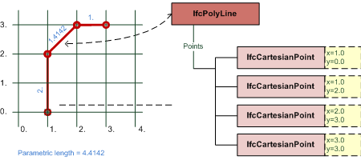

A polyline is a bounded curve of n - 1 linear segments, defined by a list of n points, P1, P2 ... Pn. The ith segment of the curve is parameterized as follows:
where i - 1 ≤ u ≤ i and with parametric range of 0 <≤ u ≤ n - 1.for 1 ≤ i ≤ n - 1
| Polyligne | |
| Polylinie |
The IfcPolyline is a bounded curve with only linear segments defined by a list of Cartesian points. If the first and the last Cartesian point in the list are identical, then the polyline is a closed curve, otherwise it is an open curve.
EXAMPLE Figure 321 illustrates a bounded IfcPolyline and shows the parametric length of each segment and of the total polyline.
 |
|
Figure 321 — Bounded IfcPolyline with parametric length |
NOTE Definition according to ISO/CD 10303-42:1992
A polyline is a bounded curve of n - 1 linear segments, defined by a list of n points, P1, P2 ... Pn. The ith segment of the curve is parameterized as follows:where i - 1 ≤ u ≤ i and with parametric range of 0 <≤ u ≤ n - 1.
NOTE Entity adapted from polyline in ISO 10303-42.
HISTORY New entity in IFC1.0
XSD Specification:
<xs:element name="IfcPolyline" type="ifc:IfcPolyline" substitutionGroup="ifc:IfcBoundedCurve" nillable="true"/>EXPRESS Specification:
| ENTITY IfcPolyline |
| SUBTYPE OF IfcBoundedCurve; |
|
| WHERE |
|
| END_ENTITY; |
Attribute Definitions:
| Points | : | The points defining the polyline. |
Formal Propositions:
| SameDim | : | The space dimensionality of all Points shall be the same. |
Inheritance Graph:
| ENTITY IfcPolyline |
| ENTITY IfcRepresentationItem |
| INVERSE |
|
| ENTITY IfcGeometricRepresentationItem |
| ENTITY IfcCurve |
| DERIVE |
|
| ENTITY IfcBoundedCurve |
| ENTITY IfcPolyline |
|
| END_ENTITY; |
 EXPRESS-G diagram
EXPRESS-G diagram Link to this page
Link to this page